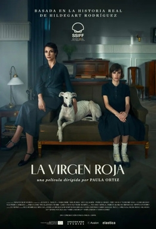

The Red Virgin[1] (Spanish: La virgen roja)[2] is a 2024 biographical drama film directed by Paula Ortiz from a screenplay by Eduard Sola and Clara Roquet. It stars Najwa Nimri and Alba Planas as respectively Aurora and Hildegart Rodríguez. Set during the Second Spanish Republic and based on a real-life story, the plot follows the tortuous relationship between a child prodigy, pundit on female sexuality and lodestar of sexual revolution (Planas) and her obsessive mother (Nimri), who groomed her and keeps her under a tight grip. Patrick Criado, Aixa Villagrán, and Pepe Viyuela appear in supporting roles.
The film is a United States-Spain co-production by Amazon MGM Studios alongside Elastica Films and Avalon PC. It world premiered at the 72nd San Sebastián International Film Festival on 22 September 2024, ahead of its 27 September 2024 theatrical release in Spain by Elastica. It was nominated for nine Goya Awards (including Best Director).
An affluent woman, Aurora Rodríguez, copulates with a clergyman. The result is the birth of Hildegart, who Aurora homeschools and grooms to become a girl prodigy able to change the world.
In 1931 Madrid, against the backdrop of the proclamation of the Second Spanish Republic, Aurora and 16-year-old Hildegart go to the editorial office of a newspaper to seek the publication of a piece on female sexuality by Hildegart, needing to convince the editor, Guzmán, that it was actually written by the teenager.
Hildegart is introduced to Socialist activist Abel Vilella who shows a keen interest in her. Hildegart and Aurora live in a well-off apartment together with maid Macarena while Hildegart continues her training. Due to her successful writing, Hildegart also corresponds with Havelock Ellis. Macarena provides Aurora with a gun due to the menace posed by misogynistic graffiti appearing on the wall of the staircase landing and reveals to Hildegart that Aurora had only loved a man (as a son) in her whole life, her nephew Pepe, of whom Hildegart knows nothing. Hildegart and Abel meet again during a meeting of socialists in which Hildegart delivers an impassioned speech supporting women rights and participation in politics as well as during a signing session of her book, after which Hildegart falls for Abel. As Hildegart secretly confesses her infatuation with Abel to Macarena, Aurora overhears from behind the door and plots to separate the two young love birds, determined not to let Hildegart stray away from her purpose.
Aurora receives a letter of invitation to a piano concert by her nephew and music prodigy Pepe Arriola, who was also groomed by Aurora and was separated from her before she decided to embark on Project Hildegart. She meets him after the concert backstage and finds out that she was not actually invited by him, and the whole thing was a ruse so Hildegart could have a date with Abel free from the maternal surveillance. Aurora invites Abel to dinner, and Abel and Hildegart tell her about their disenchantment with the Socialist party ranks and their interest in the positions of the Federal Party, which Aurora deems to boast an anarchist stance. Police agents break into the room and arrest Abel on charges of being a serial rapist and feminicide. To Hildegart's despair, Macarena is replaced by another maid. It is eventually revealed to Hildegart that Aurora had blackmailed Macarena into framing Abel for the crimes that were actually committed by Macarena's husband.
Hildegart visits Macarena's humble residence and threatens to frame her as an accomplice to the crimes unless she clears Abel's name of her own volition. With help from Guzmán, Hildegart manages to get a travel ticket to London and convinces Abel to go with her. During a family dinner, Hildegart tells her mother that she is a woman free from anyone, says good night and leaves the room. Aurora acknowledges that Project Hildegart has failed, gets the gun, goes to Hildegart's bedroom and shoots her daughter through the crotch, through the chest, and finally, through the forehead. Hildegart's dead body is paraded in a glass casket through the streets of Madrid under the twilight.
Wikidepia